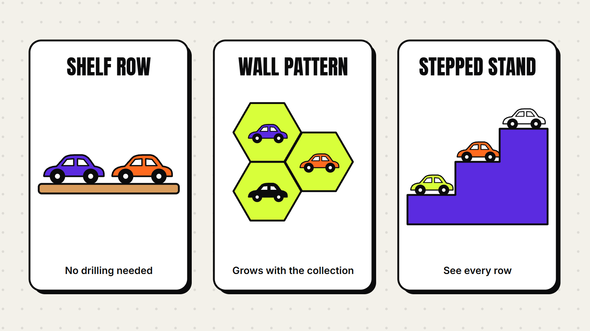
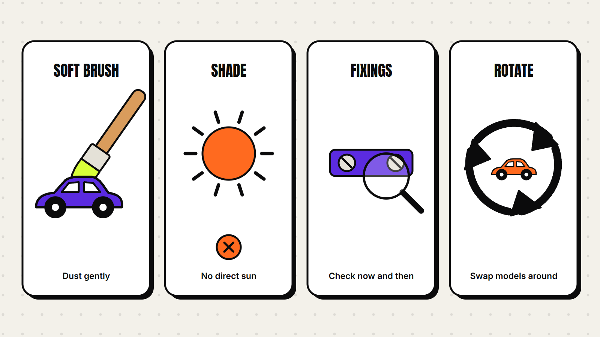

A small car collection has a way of growing. One day there are five on a shelf, and soon there is a box under the bed. A good display lets you enjoy each model while protecting it from dust, sun, and knocks. Here is how to plan one, from layout to care.
You do not need to show everything at once. Pick a theme: colour, era, body style, or favourites. Keep the rest stored and rotate the display every few months. A focused shelf often looks better than a crowded wall.

| Layout | Best for | Consider |
|---|---|---|
| Tabletop shelf | Desk or bookshelf, no drilling | Depth available and knocks |
| Wall racks | Saving surface space | Wall type, level, and fixings |
| Hexagon pattern | A feature wall that can grow | Planning the shape before drilling |
| Stepped stand | Seeing rows behind rows | Height of back row |
| Large stand | Keeping a whole set together | Footprint and stability |
Most pocket-size die-cast cars are around 1:64 scale, but length, width, and height vary, especially for trucks and race cars. Measure your largest model and check it against the slot size before buying or ordering. Carded cars still in packaging need different holders.
A dark rack makes bright paint stand out, while a white rack suits dark models. Soft indirect light shows shapes well. Avoid direct sun, which fades paint and can warm plastic enough to bend it.

Avoid walls beside windows with strong afternoon sun, bathrooms with steam, spots above a bed, and doorways where bags may catch the racks. Humid rooms can also affect packaging.
Choose a modular system you can add to, and note the colour and size so new pieces match. Leave a little space on the wall for expansion.
Our range includes hexagon wall racks, tabletop shelves for five cars, and larger stands. Cars shown in photos are not included unless a product page says so. See the die-cast display range. Need a different width, scale, or slot count? Ask for a custom quote.
Tip: Photograph your display from the doorway. If one corner looks heavy, move two models and look again.
Keep spare models in a cool, dry box away from sunlight. Wrap loose cars individually so paint does not rub, and keep carded ones flat or upright without weight on them. A small label or list helps you find a particular model without tipping everything out. In humid months, a few desiccant packs in the box protect cardboard from damp and metal axles from corrosion. Rotating from this store keeps the wall interesting and spreads wear and light exposure across the collection.
If you photograph the collection, keep the record with the box. It is useful for insurance, trading, and remembering what you already own.
Open racks look lighter and cost less, but need regular brushing. A glazed cabinet around your racks keeps dust out if the room is dusty. Check that the rack depth fits inside it.
Leave breathing room. A smaller group with clear spacing is easier to enjoy than a wall filled edge to edge, and it gives new additions a place to go.
A slot with a slight lip or side guard holds models more securely, especially near doors or where there is vibration. Check this on the product page or ask for it in a custom piece.
Larger scales need deeper and taller slots. Measure each scale separately, and give big models their own shelf so the display looks planned.
Mark all holes from one level line before drilling, then hang the middle rack first and work outwards, checking the level as you go.
Screws and wall plugs are more dependable for racks holding valued models. If drilling is not allowed, a freestanding shelf is safer than relying on tape.
A display becomes more interesting when neighbours relate to each other. Try a row from oldest to newest, a gradient from light to dark colours, or one shelf for road cars beside another for racers. Add a small label if you like. Changing the grouping a few times a year makes familiar models feel new without buying anything.
Read how to design a name plate if you want a label for your display, or learn how to care for printed pieces.